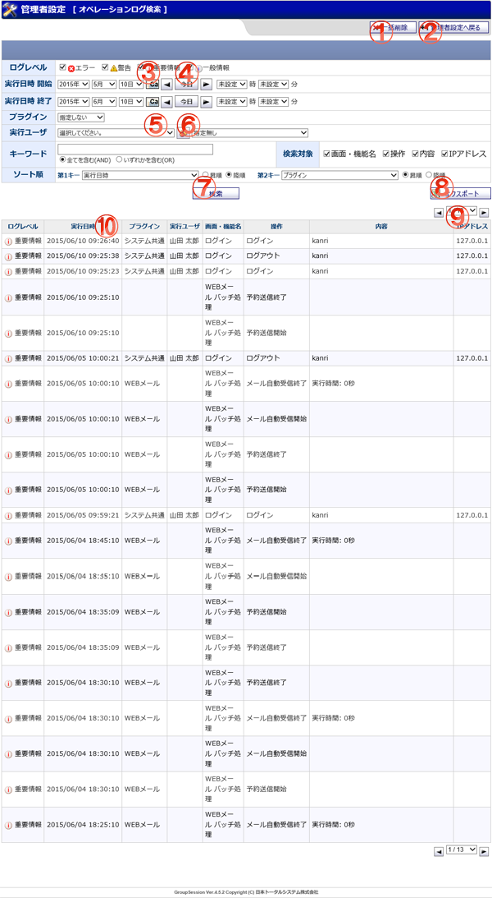

オペレーションログ情報の検索を行う画面です。

機能説明
一括削除ボタン表示されたオペレーションログ情報を一括で削除します。 |
管理者設定へ戻るボタン管理者設定画面へ遷移します。 |
|---|---|
カレンダーボタンポップアップでカレンダー画面が開きます。カレンダー画面で日付をクリックすると、クリックした日付がセットされます。 |
前日・今日・翌日ボタン年・月・日コンボを切り替えます。 |
グループコンボ実行ユーザのグループを選択します。 |
グループボタンポップアップでグループ選択画面が開きます。 |
検索ボタン入力された検索条件で検索を行い結果を表示します。 |
エクスポートボタン表示されたオペレーションログ情報をエクスポートします。 |
ページコンボ・前項・次項ページングコンボで任意のページへ、前頁アイコンクリックで前のページへ、次頁アイコンクリックで次のページへそれぞれ遷移します。 |
ヘッダタイトルクリックによって検索項目のソート条件の切り替えを行います。 |
表示・入力項目説明
実行日時 開始
開始された実行日時を選択します。
実行日時 終了
終了した実行日時を選択します。
プラグイン
検索するプラグインを選択します。
ログレベル
ログレベルを選択します。
実行ユーザ
実行ユーザの所属グループとユーザ名を選択します。
キーワード
画面・機能名、操作、内容、IPアドレスの中の検索したいキーワードを入力します。
検索対象
キーワード検索の範囲を選択します。
ソート順
第1キーと、第2キーを指定できます。それぞれのソート順について、昇順、降順の設定ができます。 検索結果のタイトルと連動しています。